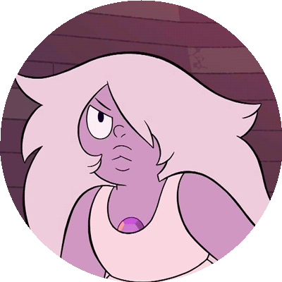

Primeira Situação
Dentro do infinito e bagunçado quarto da Ametista, ela sofre pelo seu passado. Sua insegurança gerada por sua imperfeição física a consome. Percebendo isso, a pedra de Rose brilha na porta, criando uma imagem do pior inimigo possivel de nossa personagem, uma cópia dela mesma, porem com seu físico perfeito. Ametista impulsiva da forma que é, irá:
